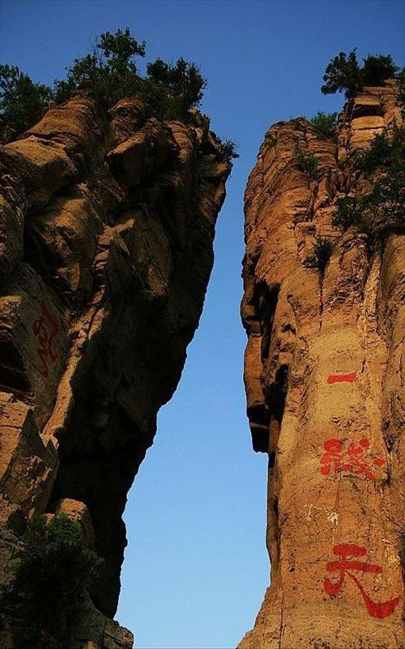

景点名称:一线天
推荐指数：★★★
景点门票：成人票（80元/人) 儿童票(1.2m以下免费) 学生票（半价40元/人）
简介：一线天，是我国名山奇峰中常有的石景，因两壁夹峙，缝隙所见蓝天如一线而得名;较为知名者有峨眉山、华山、黄山、江郎山、武夷山、九宫山、三清山等处的"一线天"美景;由于"一线天"景观奇特，已成为许多风景名胜的热门景点;从地质学的角度来看，最常见的"一线天"大都出现在石灰岩地区，是一种特殊的侵蚀地貌;但也有"一线天"是由断层形成，与前者相比，其不同处在于它们两侧的岩石有上下左右的位移。